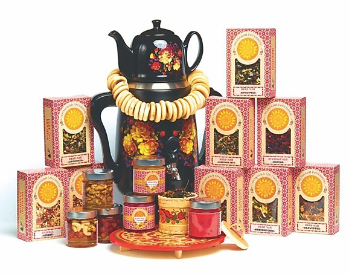
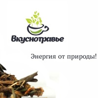

Отзывы
-

"Джел ко" Бытовая химия, г. Владивосток
-

"Хам хам сладкая кукуруза" Снэки, г. Ташкент, Узбекистан
-
.webp)
"Fbrush" Товары для дома, г. Бугульма
-

"Viva choco" Кондитерские изделия, г. Пенза
— Мы за 1 год приняли участие в Центре Закупок Сетей™ 3 раза и очень довольны результатами: 112 контактов позволило нам заключить более 20 контрактов с такими сетями как: Магнолия, Хороший выбор, Командор и др.
-

"Макаросса"
Макаронные изделия г. Саратов— Мы посещаем Центр Закупок Сетей™ 2 раза в год с 2014 года для расширения клиентской базы. На прошлом мероприятии подписали 3 контракта. Нет смысла колесить по всей стране, можно сделать все в одном месте за 2 дня.
-

"ISI-PRODUCTS"
Товары для животных, Бельгия— На переговорах за 2 дня нам удалось пообщаться практически со всеми сетями Москвы и Санкт-Петербурга. В обычном рабочем режиме на это уходят не только большое количество средств и времени, а здесь за короткое время мы провели более 20 продуктивных переговоров!
-
Отзыв участника из Китая, Shantou
Мы приехали на ЦЗС как участники выставки. Спасибо организаторам за предоставленную возможность переговоров, за предоставленные услуги переводчиков. Этот этап дал много контактов для сотрудничества,что способствует будущему развитию компании и развитию индустрии. Было 10 переговоров, половина из которых, может стать будущими контрактами.
-

"Дикси"
Наши цели в процессе переговоров были достигнуты, к нам пришло много локальных производителей, что хорошо для региона, где представлен производитель. Это поднимает продажи, так как людям знаком вкус с детства, они знают это производство и доверяют ему.
Мы думаем, 4-5 компаний из разных категорий станут нашими поставщиками и попадут на полки. Мы рассматриваем СТМ в разных категориях: от молочных продуктов до товаров прикассовой зоны. Наша сеть открыта абсолютно для всех предложений.
Пожелание участникам – быть гибкими в запросах. Иногда мы хотим изменить рецептуру, упаковку, чтобы отличаться от других представителей. Конечно мы ценим поставщиков, которые предоставляют нам такую возможность.
Формат Центра Закупок Сетей очень удобный, так как за несколько часов можно встретиться с большим количеством поставщиков. Помимо этого, это очень полезная практика для поставщика, ведь это уникальная возможность презентовать товар, обменяться контактами со многими контрагентами.
-
Сергей Любимцев
Компания «Люми»За свою более чем 30-летнюю деятельность компания никогда не работала с ритейлом. Когда было принято решение начать работу с данным каналом сбыта, нам очень помогла платформа Центр Закупок Сетей, в рамках которой можно встретиться с закупщиками.
В ходе данных мероприятий, мы заключили контракты с «Магнит», «ВкусВилл», прогрузили «Светофор» от Калининграда до Курильских островов. В данный момент идет подписание контракта с «Ашаном»
Кроме всего этого, хочется сказать, что мероприятие дает понять о трендах на рынке, о настроении сетей, об отношении компании, о продукте в целом, в том плане, что можно в какой-то момент сделать уникальное предложение той или иной сети, которое она примет. Это сокращает сроки и дает возможность оперативно реагировать на всю эту ситуацию.
Огромное спасибо менеджеру, которая вовлекла меня в эти процессы, в которые я вообще искренне не верил, но включился и получил результат. Ну и огромное спасибо команде ЦЗС в целом.
-

Арина Палло
компания «Вектор»Наша компания занимается переработкой дикоросов, производством иван-чая и сушкой ягод. На Петерфуд мы привезли наш знаменитый северный иван-чай «Вельский гостинец». Наша изюминка – полный цикл производства. Все травы, ягоды и цветы выращиваются у нас.
Данная выставка привлекает новыми знакомствами. Мы живем в маленьком городе, у нас трудная доступность к самим организаторам предприятий, сетей, оптовых компаний. Такой выезд – наша помощь не только в знакомствах, но и в опыте переговорах, возражениях. Тут мы находим новых партнеров.
Так как у нас коллективный стенд, мы не участвовали в переговорах с сетями, но было здорово, когда сами сети к нам подходили, оглядывались на наши коробочки красивые, пробовали наш чай, давали визитки и просили предоставить контакты компании для дальнейшего сотрудничества. Нам удалось переговорить с большим количеством организаций.
Выставка Петерфуд для нас является очень результативной. Нами заинтересовались несколько крупных чайных оптовых компаний, а главное – самая крупная сетка чая и кофе в Санкт-Петербурге.
-
Любовь Павлик
"Старо-Мытищинский Источник"Два года назад мы открыли новые заводы по производству бутылочек мелкой тары: от 0,5л до 8л. Ну и соответственно стали пробовать встать на полки в федеральных сетях.
В Центре Закупок Сетей мы участвуем на протяжении двух лет. Мы имеем великолепный опыт с полученными результатами. Поставляемся мы уже в сеть «Лента», «Магнолия», подписали договора «Мираторг», на согласовании «Ашан». Два года уже работаем с сетями «Ярче», «Доброцен», «Familia». Как раз таки первые сети, в которые мы заходили, были с первой встречи в Центре Закупок Сетей.
На переговорах в Центре Закупок Сетей гораздо быстрее можно было найти общий язык с категорийным менеджером, познакомиться лично с закупщиком, сразу продемонстрировать свои образцы. Так как мы новинка, это было очень важно для нас. Сомневаться здесь точно не нужно, так как это действительно большая работа, которая является связующим звеном, которое ускоряет очень многие процессы. Во-первых, это доверие, во-вторых, это личный контакт, в-третьих, это уже какие-то предварительные договоренности. Это самый короткий путь от точки А в точку B.
-

Полина Трюшкина
"Томская Кедровая Фабрика"Наша фабрика занимается производством ядра кедрового ореха и серии продуктов на основе кедрового ореха: кедровые пасты, мед, сыродавленные масла.
Мне есть с чем сравнить. Сегодня мне очень понравилось, все было очень организованно. Получилось конструктивно поговорить с федеральными и региональными сетями и достичь каких-то уже результатов в переговорах. В первый день мы переговорили примерно с 15 сетями, во второй день – около 20.
В организации мне понравилось удобство, логистика, близкое нахождение, тайминг, который был соблюден в большинстве случаев.
Мы планируем принимать участие дальше, надеемся увидеть в следующем году новые сети и магазины.
-

Филипп Клевцов
компания "Вкуснотравье"Принимал участие в выставке «Петерфуд» со стендом и вел переговоры с представителями сетей в течение двух дней на платформе Центр Закупок Сетей.
На переговорах мне удалось составить достаточно хорошую базу, с которой потом продолжил работать. После первой выставки мы заключили договор с магазином «Familia», встали на прикассовую зону Москвы, Санкт-Петербурга и областей. Заключили договор с магазином «Компас здоровья» в Санкт-Петербурге, пообщались активно с представителями «Пятерочки», «Ленты», в Москве мы общались с представителями «Азбуки Вкуса», «Перекрестка». Сейчас идет процесс подписания договора с «Лентой» на 4 региона: Санкт-Петербург, Москва, Новосибирск, Екатеринбург. Думали, что будет 2-3 SKU, а в итоге пришел запрос на 11 SKU. Также мы заходим в питерскую «Азбуку Вкуса», до московской мы пока не добрались, но вот будем учувствовать снова, уже в третий раз пойдем к ним, но с информацией о том, что уже отгружаемся на Питер.
Сам изначально сомневался касательно участия. Да, можно напрямую отправлять письма сетям и так далее, но хочу отметить, что важен непосредственно живой контакт с категориальными менеджерами, твое личное присутствие, обаяние, товар, который ты можешь показать, дать оценить эргономику товара. Считаю, что это дало свой результат.
Рекомендую принимать участие, идти ко всем, общаться и улучшать свой продукт. Мы пришли уверенными в своем продукте, после обратной связи мы стали еще более уверенными в нем. Естественно в каких-то позициях нам отказали, какие-то сети не проявили интереса, но у нас есть результат. Мы пойдем дальше общаться, заключать договоры.
Всем рекомендуем участвовать в Центре Закупок Сетей